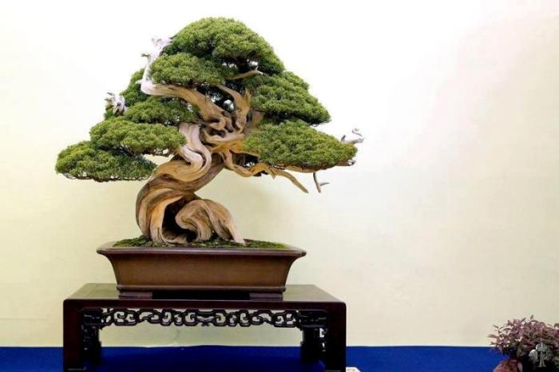

Foundations of Bonsai
Bonsai is the art of cultivating miniature trees that combine horticulture with artistic design. This page will guide you through the basics, including history, principles, terminology, and tips for beginners.
Introduction to Bonsai
Bonsai trees are living sculptures, carefully cultivated to mimic the scale and beauty of natural trees. This art requires patience, observation, and a balance between creative expression and horticultural skill.

A Brief History
The practice of bonsai originated in China over a thousand years ago, where miniature trees were created in landscapes called “penjing.” Japan later refined the art, emphasizing aesthetic balance, simplicity, and harmony. Today, bonsai is practiced worldwide by enthusiasts who nurture these miniature trees as living art.
Core Principles of Bonsai
- Miniaturization: Keeping trees small while maintaining realistic proportions.
- Container: Bonsai are grown in pots that influence growth and aesthetics.
- Pruning & Shaping: Regular trimming of branches, leaves, and roots shapes the tree.
- Aesthetic Design: Creating balance and visual interest through trunk movement, branch placement, and silhouette.
Common Bonsai Terms
| Term | Definition |
|---|---|
| Trunk | The main stem providing structure and support. |
| Nebari | The root flare at the base of the trunk. |
| Apex | The highest point of the tree. |
| Wiring | Technique using wire to shape branches. |
| Shoot | A branch or new growth. |
| Pot | The container in which a bonsai is grown. |
Why Bonsai Matters
- Mindfulness: Encourages patience and meditation.
- Artistic Expression: Each tree reflects the creator’s vision.
- Connection with Nature: Observe seasonal changes and life cycles.

Beginner Tips
- Start with hardy species like Ficus, Juniper, or Pine.
- Learn basic pruning before attempting advanced styles.
- Observe your tree daily; small changes accumulate over time.
- Keep a bonsai journal to track watering, growth, and styling progress.